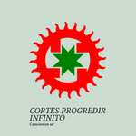

Post #1

VISÃO
Por intermédio do Movimento de Iluminação da Humanidade – Movimento Internacional de Paz pela Fé, promover a Iluminação de toda a humanidade, através da criação do lar do progredir infinito, que, sempre em harmonia com “o todo”, propiciará a concretização do paraíso terrestre.
MISSÃO
Promover o despertar da natureza divina e o crescimento espiritual das pessoas, levando-as a exteriorizar a verdadeira felicidade, o sentimento de gratidão e a alegria, criando, assim, o ambiente para estabelecer o verdadeiro objetivo da Vida: o bem-estar, a paz e a harmonia.
VALORES
Nossos valores estão claramente expostos nas Sete Declarações Iluminadoras da Seicho-No-Ie: